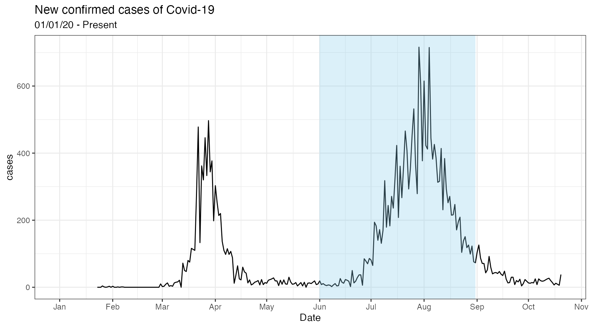

covidseasonality packagevignettes/covidseasonality-intro.Rmd
covidseasonality-intro.RmdThe covidseasonality package assesses the novel coronavirus’ cases in each hemisphere and the tropics, as cold weather migrates to the Northern Hemisphere in pandemic for the first time. It has also an embedded shiny app.
You can run the embedded Shiny app via one line of code.
library(covidseasonality) # launch_app()
First you may want to look at the country and their corresponding hemisphere
library(tibble) country_list #> # A tibble: 203 x 2 #> country hemisphere #> <chr> <chr> #> 1 Aruba T #> 2 Afghanistan N #> 3 Angola T #> 4 Anguilla T #> 5 Albania N #> 6 Andorra N #> 7 United Arab Emirates N #> 8 Argentina S #> 9 Armenia N #> 10 Antigua & Barbuda T #> # … with 193 more rows
The app relies on one data set that can be obtained through a single function join_data(). Simply filter to the countries you want to analyse in the app.
library(dplyr) join_data <- country_list %>% filter(country == "Australia") %>% covidseasonality::join_data() join_data #> # A tibble: 492,492 x 10 #> date country confirmed cases lockdown population long lat group #> <date> <chr> <dbl> <dbl> <dbl> <dbl> <dbl> <dbl> <dbl> #> 1 2020-01-22 Austra… 0 NA 0 25364307 124. -12.4 133 #> 2 2020-01-22 Austra… 0 NA 0 25364307 124. -12.4 133 #> 3 2020-01-22 Austra… 0 NA 0 25364307 124. -12.4 133 #> 4 2020-01-22 Austra… 0 NA 0 25364307 124. -12.4 133 #> 5 2020-01-22 Austra… 0 NA 0 25364307 124. -12.4 133 #> 6 2020-01-22 Austra… 0 NA 0 25364307 159. -54.7 139 #> 7 2020-01-22 Austra… 0 NA 0 25364307 159. -54.7 139 #> 8 2020-01-22 Austra… 0 NA 0 25364307 159. -54.7 139 #> 9 2020-01-22 Austra… 0 NA 0 25364307 159. -54.5 139 #> 10 2020-01-22 Austra… 0 NA 0 25364307 159. -54.5 139 #> # … with 492,482 more rows, and 1 more variable: hemisphere <chr>
These functions seek to facilitate analysis through visualization and tables.
We can use summary_table to summarise the total cases & cases per 100,000 of the population as follows:
join_data %>% summary_table()
| Country | Total cases | Total cases per 100k | average cases | average cases per 100k |
|---|---|---|---|---|
| Australia | 49,507,172 | 195,184 | 101 | 0 |
We could also make plots for countries in each hemisphere. First, to look at countries in Northern hemisphere, Southern hemisphere or Tropics, we use:
Northern_hemis #> # A tibble: 100 x 1 #> country #> <chr> #> 1 Afghanistan #> 2 Albania #> 3 Andorra #> 4 United Arab Emirates #> 5 Armenia #> 6 Austria #> 7 Azerbaijan #> 8 Belgium #> 9 Bangladesh #> 10 Bulgaria #> # … with 90 more rows Southern_hemis #> # A tibble: 17 x 1 #> country #> <chr> #> 1 Argentina #> 2 Australia #> 3 Botswana #> 4 Chile #> 5 Fiji #> 6 Falkland Islands #> 7 Lesotho #> 8 Namibia #> 9 New Caledonia #> 10 New Zealand #> 11 Papua New Guinea #> 12 French Polynesia #> 13 Solomon Islands #> 14 Swaziland #> 15 Uruguay #> 16 South Africa #> 17 Zimbabwe Tropics #> # A tibble: 86 x 1 #> country #> <chr> #> 1 Aruba #> 2 Angola #> 3 Anguilla #> 4 Antigua & Barbuda #> 5 Burundi #> 6 Benin #> 7 Burkina Faso #> 8 Bahamas #> 9 Belize #> 10 Bolivia #> # … with 76 more rows
Next, we make the plots. Sky blue shaded area represents winter months
join_data %>% plot_countries_hemis()

# WIP: These plots constructed using `ggplot2` allowing for additions if desired. For example, instead of overlaying each countr(ies) plots over one another we could `facet` to see the daily cases trend of both countries. # 2 countries in Southern_hemis # join_data <- country_list %>% # filter(country %in% c("Australia", "New Zealand")) %>% # covidseasonality::join_data() # # join_data %>% # plot_countries_hemis() + # ggplot2::facet_wrap(~country, # scales = "free_y")